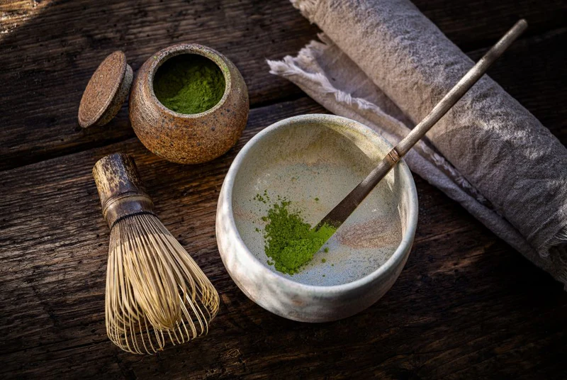

Tea & Wellness
Finding the Perfect Brew: A Guide to Matcha
Matcha is more than a trendy drink — it is a centuries-old ritual for calming the mind and brightening the day. Let's explore how to choose the right grade and prepare it mindfully at home.
Read more →